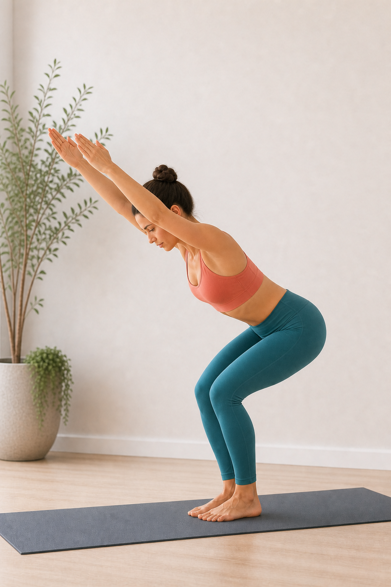
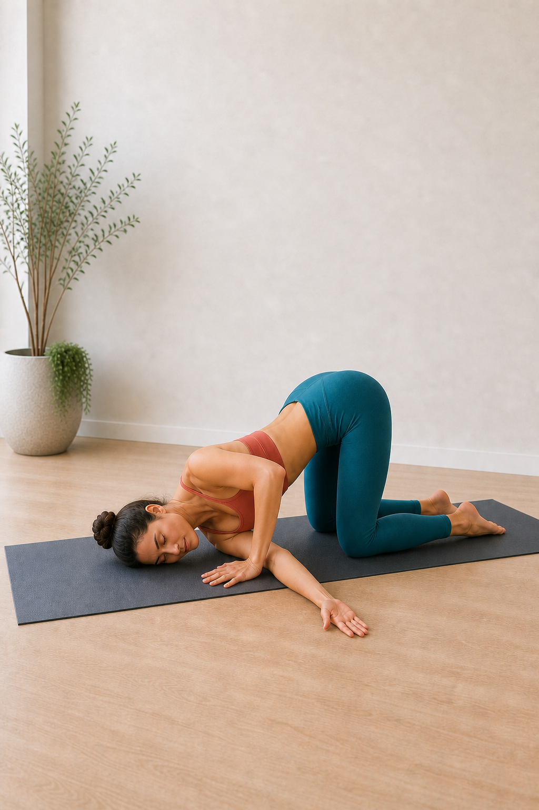
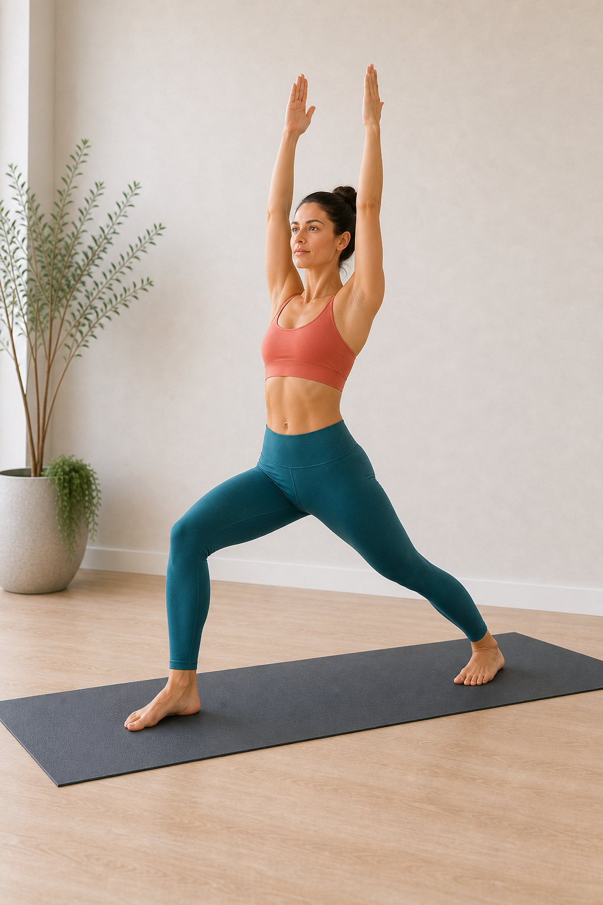
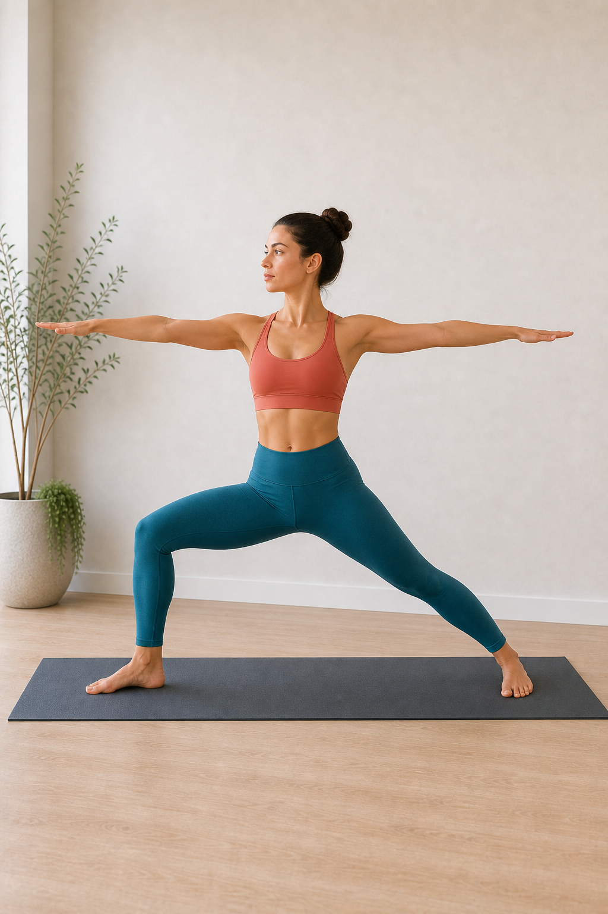

站立体式 · 前屈 · 腿后侧伸展
2，站立前屈 Uttanasana
站立前屈的核心不是“手一定要碰到地”，而是从髋部折叠，让脚掌稳定、腿后侧逐步延展、脊柱和后颈自然释放。它适合作为热身、拜日式过渡、放松腿后侧和安定呼吸的练习。

标准状态
- 双脚可并拢或与髋同宽；初学者建议与髋同宽，脚掌四角均匀压地。
- 折叠来自髋关节，坐骨向上，腹部尽量靠近大腿。
- 膝盖可以微屈；只有在腰背不被拉扯、呼吸稳定时，再逐步伸直双腿。
- 脊柱自然延展后释放，后颈放松，头顶朝向地面，不主动抬头看前方。
- 双手落在地面、瑜伽砖、脚踝或小腿上都可以，以保持呼吸和腰背舒适为准。
- 重心落在脚掌中部，脚跟不虚浮，脚趾不抓地。
做对与做错的常见感觉
做对时通常会感觉到
- 腿后侧有均匀、可呼吸的拉伸感，强度大约在 5-7 分，不是尖锐疼痛。
- 腹部靠近大腿后，腰背像被轻轻拉长，而不是下腰被硬拽住。
- 脚掌踩得稳，重心在脚掌中部，脚跟不飘，脚趾不需要用力抓地。
- 肩颈和头部能自然下沉，呼吸能慢下来，脸和下颌不紧绷。
- 保持几轮呼吸后，身体可能一点点变软，前屈深度自然增加。
做错或过度时常见感觉
- 腰部酸胀、被拉扯或顶住，尤其是下腰比腿后侧更明显。
- 膝盖后侧有尖锐拉痛，或为了伸直腿而把膝盖锁死、向后顶。
- 手拼命够地，肩膀耸起，脖子用力，呼吸变短或憋气。
- 脚趾抓地、脚跟变轻，身体像要向前倒，重心不稳定。
- 出现麻、刺、电流感、放射到臀腿的感觉，或起身时头晕明显。
动作要点
1. 先找脚，再找髋
脚掌稳定是前屈的底座。轻轻压实大脚趾根、小脚趾根和脚跟两侧，再让髋部向后、坐骨向上。
2. 用屈膝保护腰背
腿后侧紧时，屈膝反而更接近正确练习：腹部能贴近大腿，腰椎不需要硬撑成弓形。
3. 呼气时深入，吸气时拉长
每次吸气感觉脊柱有空间，每次呼气让肩颈、后背和腿后侧慢慢放松。
进入与退出
- 从山式站立开始，双脚踩稳，膝盖朝向脚尖，吸气让胸腔和脊柱向上延展。
- 呼气，微屈膝，从髋部向前折叠，让腹部先靠近大腿，而不是先追求手碰地。
- 双手放到瑜伽砖、地面、脚踝或小腿；吸气进入半前屈，背部拉长。
- 再次呼气，回到前屈，放松头颈，保持 5-8 轮平稳呼吸。
- 退出时屈膝，核心轻轻向内收，手扶髋或保持脊柱延展，慢慢回到站立。
如何逐步达到标准状态
阶段一：先稳定
脚与髋同宽，膝盖明显弯曲，手放高砖。目标是腹部贴大腿、腰背无拉扯、呼吸不断。
阶段二：练屈髋
在半前屈和前屈之间来回 5-8 次，感受髋部折叠，背部先变长，再慢慢释放。
阶段三：降低支撑
把瑜伽砖从高位调到中位或低位。若腰背仍舒适，再一点点伸直膝盖。
阶段四：深入保持
手可落地或扶脚踝，重心微微向前到脚掌中部，坐骨上提，头颈完全放松。
常见问题
摸不到地怎么办？
用瑜伽砖或椅子垫高双手。前屈的进步标准是髋部折叠更清晰、呼吸更顺，不是手的位置更低。
腰酸或腰被拽住？
立刻屈膝，让腹部贴近大腿，减少背部被动拉扯。若出现刺痛、麻木或放射感，停止练习。
膝盖需要完全伸直吗？
不需要强求。腿后侧逐渐打开后，膝盖会自然更接近伸直；锁死膝盖反而容易让腰和膝承压。
5-10 分钟练习流程
- 热身 2 分钟：猫牛式、下犬式或站立半前屈，唤醒脊柱和腿后侧。
- 动态进入 1-2 分钟：半前屈和前屈交替 5-8 次。
- 主练 3 轮：每轮保持 5-8 次呼吸，中间回到半前屈。
- 放松 1 分钟：屈膝悬垂，观察后背、腿后侧和呼吸的变化。
安全提醒
练习中以“可呼吸、无疼痛、可退出”为准。 如果有急性腰背伤、椎间盘问题、坐骨神经痛、腿后侧拉伤、眩晕、青光眼、眼压问题、血压控制不稳定，或正在孕期，请先咨询专业老师或医生，并使用椅子、墙面或瑜伽砖降低强度。
站立体式 · 根基 · 中立站姿
1，山式站立 Tadasana
山式看起来像“只是站着”，其实是在练习脚掌根基、骨盆中立、脊柱向上延展和呼吸稳定。它是许多站立体式的起点，也适合用来校准日常站姿。

标准状态
- 双脚可并拢或与髋同宽；初学者建议与髋同宽，脚趾自然朝前。
- 脚掌四角均匀压地，足弓轻轻上提，脚趾舒展但不抓地。
- 膝盖朝向第二脚趾，双腿有向上的力量，但膝盖不向后锁死。
- 骨盆保持中立，尾骨自然向下，前侧肋骨不过度外翻。
- 脊柱向上延展，胸腔打开，肩膀放松下沉，不夹肩、不耸肩。
- 手臂自然垂在身体两侧，掌心朝前；若肩膀紧张，可让掌心微微朝内。
- 下巴微收，后颈变长，头顶向上，目光平视前方。
做对与做错的常见感觉
做对时通常会感觉到
- 脚掌稳稳贴地，重量平均分布，不会明显偏向脚跟或脚趾。
- 腿部有轻微向上收束的力量，但膝盖和大腿前侧不僵硬。
- 下背部有空间，骨盆像被稳定托住，而不是刻意夹臀或塌腰。
- 胸腔自然开阔，肩颈轻松，手臂垂在身体两侧，掌心朝前或微微朝内。
- 呼吸顺畅，站着时有“向下扎根、向上长高”的稳定感。
做错或过度时常见感觉
- 脚趾抓地、足弓塌陷，或重心明显压在脚跟、脚外侧。
- 膝盖向后顶住，腿前侧紧绷，站久后膝盖后侧不舒服。
- 腰眼被挤压、肋骨向前翘，像在用塌腰换取“挺胸”。
- 为了让掌心朝前而向后硬夹肩膀，或出现耸肩、脖子紧、呼吸变浅。
- 身体左右摇晃明显，或闭眼后立刻失去平衡。
动作要点
1. 脚掌先扎根
感受大脚趾根、小脚趾根和脚跟两侧均匀压地，让足弓有轻轻提起的弹性。
2. 腿有力量，但关节不锁死
膝盖朝向脚尖，大腿轻轻向上收；保持膝盖微微有弹性，避免向后顶。
3. 骨盆和肋骨回到中立
尾骨自然向下，前侧肋骨轻轻收回，胸腔不是硬挺，而是在稳定中打开。
4. 掌心朝前，但肩膀不硬拧
常见山式会让掌心朝前，帮助胸腔打开；如果肩颈因此紧张，就让掌心微微朝内，保持肩膀自然下沉。
进入与保持
- 双脚站稳，可并拢或与髋同宽，先让脚趾抬起再轻轻放回地面。
- 把身体重量在脚掌前后左右微调，找到脚掌中部最稳定的位置。
- 膝盖保持柔软，大腿轻轻上提，骨盆回到中立，尾骨自然向下。
- 吸气让脊柱变长，呼气放松肩膀和下颌，手臂自然垂放，掌心朝前或微微朝内。
- 保持 5-10 轮呼吸，观察脚掌、骨盆、胸腔和头顶是否在同一条中轴上。
如何逐步达到标准状态
阶段一：靠墙找线
背靠墙站立，感受后脑、上背、骨盆附近的相对位置；不需要把每一处都硬贴墙。
阶段二：练脚掌觉察
轻轻前后左右移动重心，再回到脚掌中部。目标是脚趾放松、足弓有弹性。
阶段三：建立中轴
吸气头顶向上，呼气脚掌向下扎根。让身体不是僵直，而是上下都有方向。
阶段四：融入练习
在前屈、战士式、树式前后回到山式，用它检查左右重量和呼吸是否恢复稳定。
常见问题
双脚一定要并拢吗？
不一定。若并拢会让你不稳、膝盖内扣或骨盆紧张，先双脚与髋同宽更合适。
为什么站着反而腰酸？
多半是肋骨外翻、骨盆前倾或膝盖锁死。先微屈膝，尾骨自然向下，前侧肋骨轻轻收回。
山式需要用力收腹吗？
不需要憋住肚子。可以轻轻感受下腹向内上方有支撑，但呼吸仍然能流动。
3-5 分钟练习流程
- 脚掌觉察 1 分钟：脚趾抬起放下，找到脚掌四角压地。
- 重心校准 1 分钟：身体前后左右小幅移动，再回到中心。
- 中轴呼吸 1-2 分钟：吸气向上延展，呼气向下扎根。
- 整合 1 分钟：放松肩颈和下颌，保持目光平稳，观察站姿是否省力。
安全提醒
山式的稳定感来自清醒的放松，不是把身体站僵。 如果练习时头晕、膝盖不适、腰部压迫或平衡困难，请把双脚打开到与髋同宽，保持眼睛睁开，必要时靠墙练习。若有持续疼痛或眩晕，请停止并咨询专业人士。
站立体式 · 力量 · 屈膝坐髋
3，幻椅式 Utkatasana
幻椅式像坐向一把看不见的椅子：脚掌扎根，膝盖弯曲并朝向脚尖，髋部向后，脊柱保持延展。它能训练腿部、臀部和核心力量，也常出现在拜日式 B 的序列中。

标准状态
- 双脚可并拢或与髋同宽；初学者建议与髋同宽，脚掌四角均匀压地。
- 膝盖弯曲并朝向第二、第三脚趾方向，不向内夹，也不向外散。
- 髋部向后坐，重量分布在脚掌中后部，脚趾舒展不抓地，脚跟不抬起。
- 骨盆保持中立，下腹轻轻向内上方支撑，腰椎不过度塌陷。
- 脊柱延展，头略低，后颈拉长，身体从髋部前倾，但背部不拱起。
- 双臂沿耳旁向前上方伸展，尽量让手臂、后脑、背部和腰背形成一条长直线，掌心相对；若肩颈紧张，可让双手合十于胸前或扶髋。
做对与做错的常见感觉
做对时通常会感觉到
- 大腿前侧、臀部和核心有发力感，强度清楚但呼吸仍能持续。
- 脚掌稳稳压地，尤其脚跟和脚掌中部有支撑，脚趾不需要抓地。
- 膝盖方向稳定，能感觉腿部在主动托住身体，而不是关节被顶住。
- 背部有延展感，手臂、后脑、背部和腰背像一条向前上方延伸的长直线，肩膀不耸到耳朵旁。
- 退出后腿部发热、呼吸变深，但膝盖和下腰没有刺痛或压迫感。
做错或过度时常见感觉
- 膝盖内扣、膝盖前侧刺痛，或感觉压力集中在膝关节。
- 脚跟变轻、脚趾抓地，身体像要向前扑，重心不稳。
- 下腰被挤压，肋骨向前翘，头抬太高，像用塌腰和仰头来把手臂抬高。
- 手臂垂直向上但躯干塌腰，或肩膀耸起、脖子紧、呼吸变短，说明手臂位置需要降低。
- 大腿烧灼感强到憋气、发抖失控，说明保持时间或下蹲深度过大。
动作要点
1. 先坐髋，再屈膝
从山式进入时，先让髋部向后，好像要坐到身后的椅子上，再让膝盖自然弯曲。
2. 膝盖跟脚尖同向
观察膝盖是否朝向第二、第三脚趾。膝盖可以向前移动，但不要内扣或左右摇晃。
3. 手臂跟随躯干斜向上
双臂沿耳旁向前上方延展，后脑跟随脊柱，不抬头看前方；尽量让手臂、后脑、背部和腰背连成一条长直线。
4. 肋骨收回，避免塌腰
前侧肋骨轻轻收回，下腹有支撑，避免为了抬高手臂而塌腰或把头抬高。
进入与退出
- 从山式站立开始，双脚踩稳，吸气让脊柱向上延展。
- 呼气屈膝，髋部向后坐，保持膝盖朝向脚尖。
- 吸气双臂沿耳旁向前上方伸展，掌心相对；肩颈紧张时，双手可合十于胸前。
- 保持 3-6 轮呼吸，持续感受脚掌扎根、下腹支撑和背部延展。
- 退出时吸气伸直双腿回到山式，呼气放松手臂和肩颈。
如何逐步达到标准状态
阶段一：浅坐
只屈膝一点点，双手扶髋。目标是找到脚掌稳定和膝盖同向，不追求蹲得深。
阶段二：墙面辅助
背靠墙轻轻滑下，练习髋部向后坐和膝盖对齐，避免重心全部冲到脚趾。
阶段三：加入手臂
先双手合十胸前，再尝试手臂沿耳旁向前上方伸展。只要肩颈紧，就把手臂降低。
阶段四：稳定保持
保持 3-6 轮呼吸，腿部发力但呼吸不断；退出后回到山式观察双脚和膝盖。
常见问题
膝盖能不能超过脚尖？
可以略微向前移动，关键是膝盖方向稳定、脚跟不抬、膝盖没有疼痛。不要为了“不过脚尖”而塌腰或后倒。
肩膀紧，手举不上去怎么办？
双手合十胸前、手扶髋，或让手臂与肩同高。幻椅式的核心不是手举多高，也不是必须垂直上举，而是脚、膝、髋和脊柱稳定。
大腿很酸正常吗？
腿部发热和酸胀常见；如果出现膝盖刺痛、下腰压迫或憋气，就减少下蹲深度或缩短保持时间。
3-6 分钟练习流程
- 热身 1 分钟：山式中屈伸膝盖，找到脚掌稳定。
- 动态练习 1-2 分钟：吸气站高，呼气浅坐，重复 5-8 次。
- 主练 2-3 轮：每轮保持 3-6 次呼吸，中间回到山式休息。
- 整合 1 分钟：回到山式，观察大腿、臀部、下腰和呼吸是否恢复稳定。
安全提醒
幻椅式应当是肌肉发力，不是关节硬扛。 如果有膝盖急性伤、明显腰痛、平衡困难或血压不稳定，请减少下蹲深度，双脚打开到与髋同宽，必要时扶墙或椅背。若出现刺痛、麻木、头晕或膝盖不适，请退出体式。
跪姿体式 · 温和扭转 · 肩颈放松
4，穿针式 Thread the Needle
穿针式是一种温和的跪姿扭转：一侧手臂从身体下方穿过，让肩膀、肩胛骨内侧和上背慢慢释放。它很适合久坐、低头后肩颈发紧时练习，重点是让呼吸变深，而不是把脖子或肩膀压得更低。

标准状态
- 从四足跪姿开始，双膝与髋同宽，膝盖在髋部下方；支撑手和双腿保持稳定，不主动挪动位置。
- 一侧手臂从另一侧腋下穿过，掌心朝上或朝向侧方，手臂自然延展，手伸出瑜伽垫也可以。
- 穿过侧的肩膀和侧脸轻轻落向垫面；如果脖子被扭住，就在头下垫毛毯或瑜伽砖。
- 髋部尽量保持在膝盖上方，不向一侧大幅偏移，腰背保持自然长度。
- 支撑手轻轻推地，手肘可以自然弯曲，帮助身体稳定，而不是把身体强行向下压。
- 呼吸进入后背和肩胛骨之间，保持 5-8 轮呼吸后换边。
做对与做错的常见感觉
做对时通常会感觉到
- 穿过侧的肩胛骨内侧、上背和肩后侧有温和牵拉感，强度清楚但可以呼吸。
- 后颈和下颌逐渐放松，头部是被垫面或辅具承托住的，不需要用力悬着。
- 每次呼气时，肩膀像慢慢变重，上背有一点点旋转和展开。
- 腰背不被拧疼，髋部稳定，膝盖和脚背没有明显压痛。
- 换边后，肩颈活动范围可能更轻松，呼吸也更容易进入背部。
做错或过度时常见感觉
- 颈部被挤压、侧脸压得疼，或为了贴地而把头颈硬扭到一边。
- 肩膀前侧有尖锐疼痛，或手臂出现麻、刺、电流感。
- 支撑手用力过猛，把身体往下压，导致呼吸变短、胸口被卡住。
- 髋部明显歪到一侧，下腰有扭痛或压迫感。
- 膝盖、手腕或脚背承担太多压力，注意力都被关节不适带走。
动作要点
1. 从稳定四足跪姿开始
先确认双膝、支撑手和脚背稳定在垫面上，再进入扭转。根基稳定后，肩颈才更容易放松。
2. 手臂穿过，身体不硬压
穿过的手臂像从针眼里滑过去，肩膀慢慢落下即可；不要用支撑手把身体强行按低。
3. 让头颈被承托
侧脸、太阳穴或耳侧附近可以轻放垫面。若脖子不舒服，立刻垫高头部或减少扭转幅度。
4. 髋部留在膝盖上方
髋部不需要跟着肩膀一起塌到侧面。保持骨盆稳定，扭转更多来自上背和胸椎。
进入与退出
- 从四足跪姿开始，双手双膝撑地，先做 3-5 次猫牛式，让脊柱活动起来。
- 吸气时右臂向侧上方打开，胸腔轻轻转向右侧，感受上背变宽。
- 呼气时右臂从左腋下穿过，右肩和右侧脸慢慢靠近垫面。
- 左手留在原来的支撑位置，手肘自然弯曲；保持 5-8 轮呼吸，观察肩颈是否越来越松。
- 退出时左手轻推地面，吸气慢慢回到四足跪姿，再换另一侧。
如何逐步达到标准状态
阶段一：活动上背
先做猫牛式和四足跪姿开胸，让肩胛骨附近有一点温度，再进入穿针式。
阶段二：浅穿过
手臂只穿过一半，肩膀不一定落地。目标是脖子舒服、呼吸不中断。
阶段三：垫高头肩
用毛毯或瑜伽砖承托侧脸和肩膀，减少颈椎压力，让上背慢慢适应扭转。
阶段四：稳定保持
在不麻、不刺、不憋气的前提下保持 5-8 轮呼吸，感受肩胛内侧逐渐松开。
常见问题
头一定要贴地吗？
不一定。头颈舒服比贴地重要。可以在头下垫毛毯、抱枕或瑜伽砖，让颈部保持被承托。
为什么肩膀前侧疼？
可能是穿过太深、支撑手压得太用力，或肩关节本身暂时不适合这个角度。先减少幅度，若仍疼就退出。
髋部要不要坐向脚跟？
这个版本建议髋部大致留在膝盖上方，更容易把扭转放在上背；若坐向脚跟，会更接近婴儿式变化。
5-8 分钟练习流程
- 热身 2 分钟：猫牛式、肩胛骨绕动、四足跪姿开胸。
- 动态进入 1 分钟：吸气打开手臂，呼气穿过，左右各 3 次。
- 主练 3-4 分钟：每侧保持 5-8 轮呼吸，中间回到四足跪姿观察差异。
- 收尾 1 分钟：婴儿式或坐姿轻轻转动头颈，保持呼吸柔和。
安全提醒
穿针式应当是肩颈和上背慢慢松开，不是把脖子拧到极限。 如果有急性肩颈伤、颈椎问题、手臂麻木刺痛、明显头晕、近期肩部手术或手腕膝盖无法承重，请先咨询专业人士，并使用毛毯、瑜伽砖或椅子降低强度。练习中一旦出现刺痛、麻木、放射痛或呼吸被卡住，就立即退出。
站立体式 · 力量 · 髋部前向
5，战士一式 Virabhadrasana I
战士一式像一个稳定而向上的弓步：前膝弯曲，后腿有力伸直，髋部和胸腔尽量朝向前方，双臂向上延展。它训练腿部根基、髋部稳定、胸腔打开和专注感。

标准状态
- 前脚朝向垫子短边，前膝弯曲并朝向第二、第三脚趾，不向内扣。
- 后脚跟落地，后脚约向外打开 30-45 度，后腿伸直有力，但膝盖不锁死。
- 髋部和胸腔尽量朝向前方；如果骨盆扭不过来，就把双脚左右分开一点。
- 尾骨自然向下，下腹轻轻支撑，前侧肋骨不向外顶出，避免塌腰。
- 双臂沿耳旁向上伸展，掌心相对或合十；肩膀远离耳朵，后颈保持长度。
- 目光可看向双手方向；如果颈部不舒服，就平视前方。
做对与做错的常见感觉
做对时通常会感觉到
- 前腿和后腿都在发力，脚掌稳定压地，身体有向上升起的力量。
- 后腿髋前侧有清晰拉伸，强度可呼吸，不是刺痛或扯痛。
- 胸腔打开，手臂向上延展，但肩颈没有耸紧。
- 下腰有支撑感，肋骨没有向前翘，呼吸仍能进入胸腔和两侧肋骨。
做错或过度时常见感觉
- 前膝内扣或膝盖前侧刺痛，说明膝盖和脚尖方向没有对齐。
- 后脚跟翘起、后腿虚浮，身体重量全部压到前腿。
- 为了让髋朝前而扭到膝盖或下腰，出现腰部挤压感。
- 手臂上举后耸肩、脖子紧、呼吸变短，说明手臂需要降低或分开。
动作要点
1. 前膝先对齐
前膝朝向第二、第三脚趾，膝盖可以在脚踝上方或略向前，但不要向内夹。
2. 髋朝前，不硬拧
战士一式需要髋部朝前，但不要求骨盆完全平齐。髋紧时，缩短站距、双脚左右分开更安全。
3. 向下扎根，向上延展
脚掌向下压，脊柱和手臂向上长，肋骨轻收，避免用塌腰换取“挺胸”。
进入与退出
- 从山式开始，一脚向后迈出，前脚朝前，后脚外转约 30-45 度。
- 吸气拉长脊柱，呼气弯曲前膝，让前膝朝向脚尖。
- 调整髋部和胸腔尽量朝前，必要时缩短站距或把双脚左右打开。
- 吸气双臂上举，肩膀放松，保持 3-6 轮呼吸。
- 退出时后脚向前走回山式，观察双腿和呼吸，再换侧。
如何逐步达到标准状态
阶段一：缩短站距
站距短一点，后脚跟稳稳落地，先找到前膝对脚尖和骨盆稳定。
阶段二：手扶髋
双手扶髋练习，让髋部朝前，但不强行扭膝盖或压下腰。
阶段三：加入手臂
双臂上举，掌心相对；肩颈紧时双手分开更宽，或双手合十于胸前。
阶段四：稳定保持
保持 3-6 轮呼吸，感觉脚掌、腿、髋和脊柱共同支撑身体。
常见问题
后脚跟总是抬起来？
缩短站距，后脚再多外转一点，先让后脚外缘和脚跟有稳定接触。
髋部朝不了正前方怎么办？
不用硬拧。把两脚左右分开，给骨盆更多空间，保持前膝和后膝都舒服。
腰会挤压怎么办？
前侧肋骨轻收，尾骨自然向下，手臂可以降低，减少为了上举而塌腰。
4-8 分钟练习流程
- 热身 2 分钟：山式、低弓步、髋前侧轻伸展。
- 动态进入 1-2 分钟：吸气站高，呼气弯前膝，左右各 3 次。
- 主练 2-4 轮：每侧保持 3-6 次呼吸，中间回到山式。
- 收尾 1 分钟：站立前屈或下犬式，放松腿部和下背。
安全提醒
战士一式应当是脚腿有力、脊柱向上，不是膝盖和下腰硬扛。 如果有膝盖、髋部、腰椎或平衡问题，请缩短站距，减少前膝弯曲幅度，必要时扶墙或椅背。出现刺痛、麻木、头晕或关节不适时，请退出体式。
站立体式 · 开髋 · 横向稳定
6，战士二式 Virabhadrasana II
战士二式强调横向展开：前膝弯曲，后腿伸直，髋部、肚脐、胸腔朝向垫子长边，双臂向两侧水平延展。它能训练腿部力量、髋部打开、肩带稳定和专注凝视。

标准状态
- 双脚大幅分开，前脚朝向垫子短边，前膝弯曲并朝向第二、第三脚趾。
- 前脚脚跟对准后脚足弓中心；后脚横放，脚尖朝向垫子长边，后脚外缘稳定压地。
- 髋部、肚脐和胸腔朝向垫子长边，躯干直立在骨盆上方，不向前后倾斜。
- 后腿伸直有力，后膝不塌，双脚均匀扎根，重量不全部冲到前腿。
- 双臂向两侧水平延展，与垫子长边平行，掌心向下，肩膀放松。
- 目光看向前手指尖，后颈保持长度，呼吸稳定。
做对与做错的常见感觉
做对时通常会感觉到
- 前大腿和臀部有稳定发力，后腿外缘压地，身体像被两脚向两端拉开。
- 胸腔、肚脐和骨盆朝向侧面，身体不拧巴，呼吸能在胸口展开。
- 双臂水平延展，肩膀宽而不耸，目光稳定地看向前手。
- 前膝方向稳定，膝盖没有向内掉，也没有明显顶住关节的感觉。
做错或过度时常见感觉
- 前膝内扣、膝盖前侧疼，或脚趾抓地，说明根基和膝盖方向需要调整。
- 胸腔和肚脐斜向前脚，身体像战士一式和战士二式混在一起。
- 躯干向后仰、骨盆向后跑，前腿压力很大，后脚变轻。
- 双臂一高一低、肩膀耸起，或后手臂无力掉下来。
动作要点
1. 先摆脚位
前脚朝垫子短边，后脚横放；前脚脚跟对准后脚足弓中心，帮助骨盆稳定打开。
2. 前膝跟脚尖同向
前膝向第二、第三脚趾方向弯曲，不要向内倒。必要时减小弯曲幅度。
3. 胸髋朝长边
让髋部、肚脐和胸腔朝向垫子长边，双臂也沿长边水平展开，不让身体斜向前脚。
进入与退出
- 双脚大幅分开站在垫子上，双臂侧平举，先找到手腕大致在脚踝上方的宽度。
- 前脚转向垫子短边，后脚横放，调整前脚跟对准后脚足弓中心。
- 呼气弯曲前膝，让膝盖朝向脚尖，同时后腿伸直、后脚外缘压地。
- 髋部、肚脐和胸腔朝向垫子长边，双臂水平延展，目光看向前手。
- 退出时吸气伸直前腿，双脚转回前方，再换另一侧。
如何逐步达到标准状态
阶段一：脚位校准
先不弯膝，反复练前脚跟对后脚足弓中心，确认后脚外缘能压地。
阶段二：浅弯前膝
只弯一点点前膝，保持膝盖朝脚尖，感受胸髋朝向垫子长边。
阶段三：加入手臂
双臂水平向两侧伸展，肩膀下沉，后手不要掉，目光看向前手。
阶段四：稳定保持
保持 3-6 轮呼吸，前腿发力、后腿扎稳，躯干直立不后仰。
常见问题
前膝总是内扣？
减少弯曲幅度，主动让膝盖朝第二、第三脚趾方向；也可以缩短站距。
胸腔总是斜向前脚？
先伸直前腿，把髋和胸转向垫子长边，再重新弯前膝。必要时减少站距。
肩膀和手臂很累？
肩膀下沉，手臂从胸口向两端延展。手臂可以短暂放下休息，再重新进入。
4-8 分钟练习流程
- 热身 2 分钟：山式、侧向开髋、腿部小幅弓步。
- 脚位练习 1 分钟：前脚跟对后脚足弓中心，左右各确认 2-3 次。
- 主练 2-4 轮：每侧保持 3-6 次呼吸，中间伸直前腿休息。
- 收尾 1 分钟：双脚并拢回山式，观察大腿、髋部和肩颈。
安全提醒
战士二式应当是横向稳定和开阔，不是膝盖硬顶或身体后仰。 如果有膝盖、髋部、脚踝或平衡问题，请缩短站距、减少前膝弯曲，必要时扶墙练习。出现膝盖刺痛、髋部夹痛、脚踝不稳或头晕时，请退出体式。